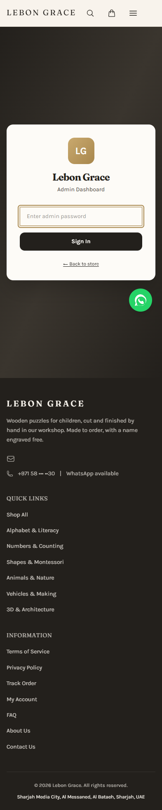

HIGH · AD-01 — Customer-notifying status changes have no confirmation
Order status select applies directly. Require explicit confirmation with message preview and a clear separation of internal note vs customer notification.
Unauthenticated scope only. No password, records, export or destructive action used.
Protected data endpoints denied anonymous access and login UI is clean. Status changes can trigger customer messages without a confirmation, preview or undo; the shared identity has no individual accountability.
Order status select applies directly. Require explicit confirmation with message preview and a clear separation of internal note vs customer notification.
One shared login does not establish who accessed PII/exported data/changed orders. Use individual identity or named operator attribution plus append-only audit events.
Protected subscribers/orders returned 401 without session; login reports unauthenticated; HMAC httpOnly signed 12-hour session, secure production cookie, constant-time password comparison and durable login throttle are present.

Evidence retained here. Next: Operations / Workshop Operator.